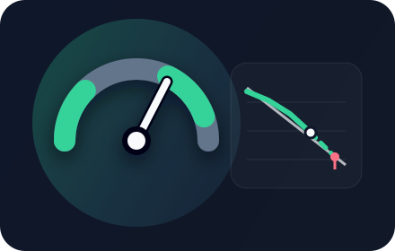
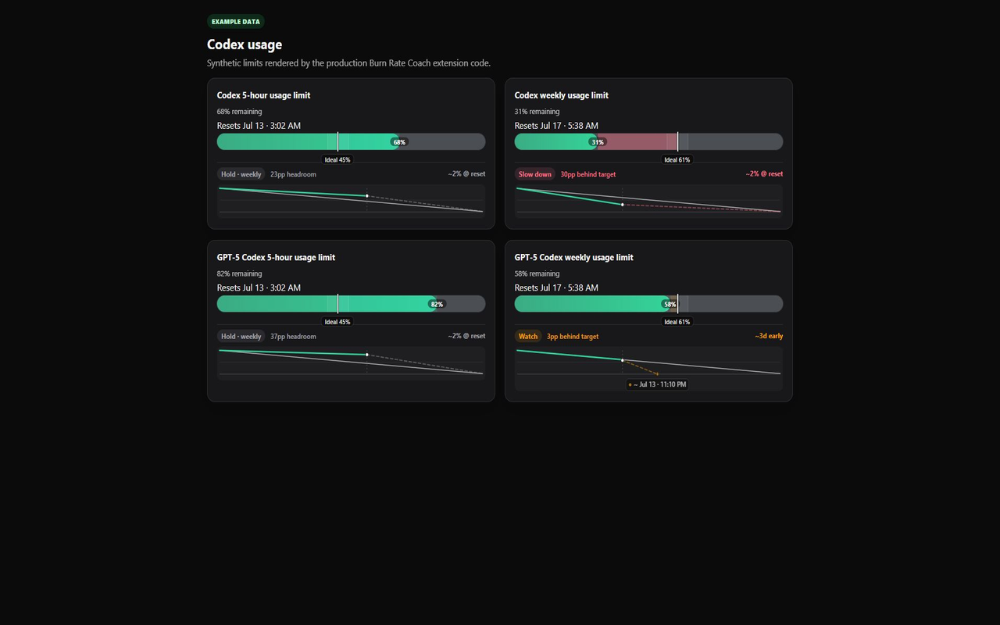
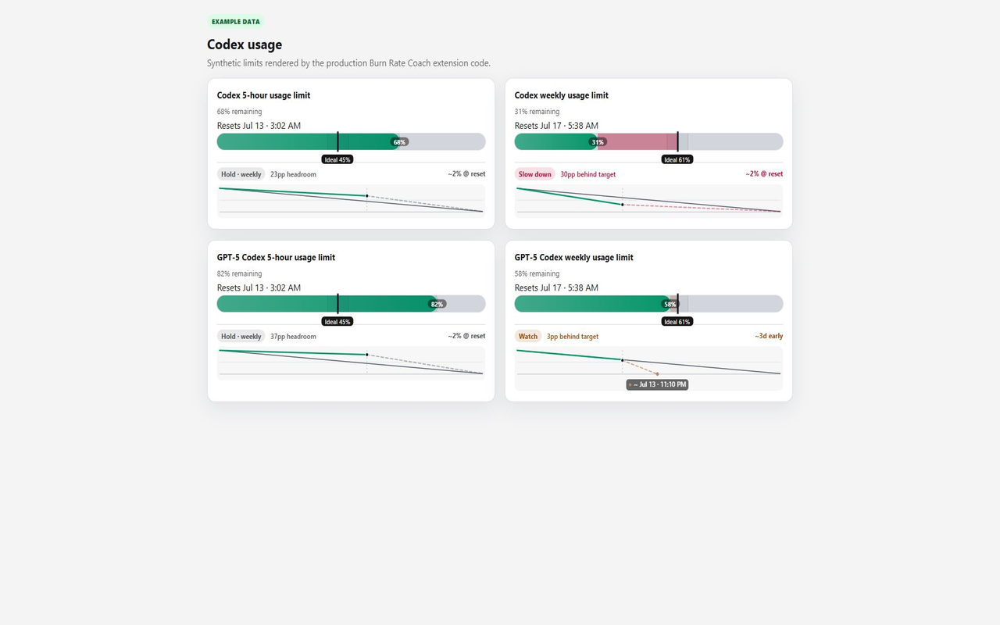
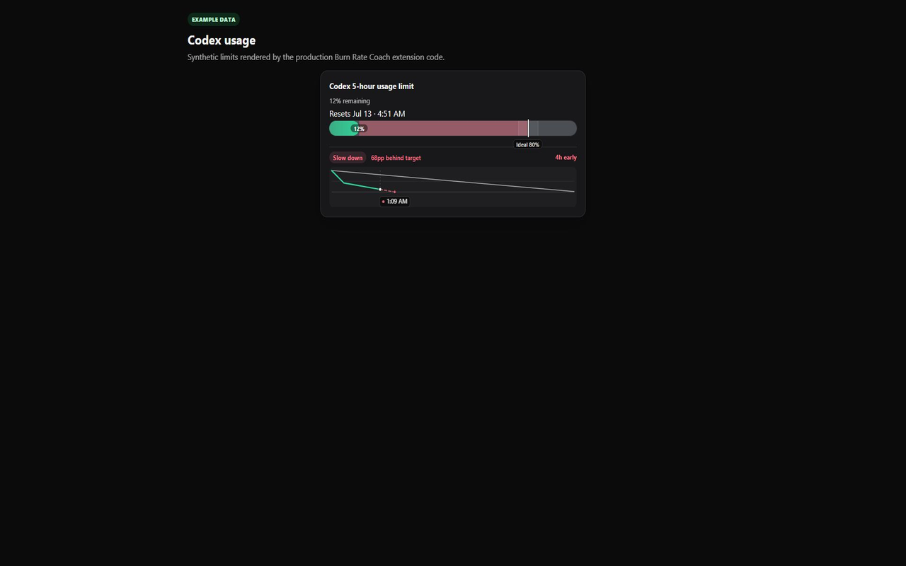
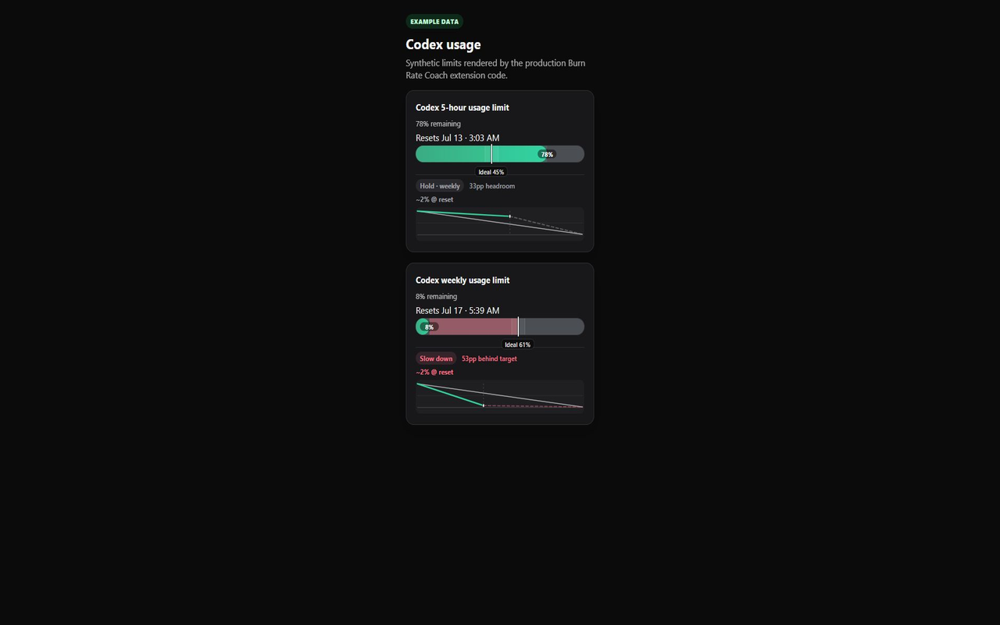

Clear guidance
Calibrating, Watch, Slow down, On pace, or Headroom—based on position, trajectory, and confidence. Longer-window limits guard shorter ones in the same pool.
Burn Rate Coach turns Codex quota percentages into a clear pacing decision, an ideal-now marker, and a forecast for your next reset.

See how today’s position and recent pace fit the time remaining—without opening another dashboard.
Calibrating, Watch, Slow down, On pace, or Headroom—based on position, trajectory, and confidence. Longer-window limits guard shorter ones in the same pool.
Early estimates use activity since reset. Forecasts become trusted only after enough matching local observations exist.
Choose an end-of-window reserve and tolerance. Popup settings save immediately and work in light or dark mode.
These images run the production extension code against a private, structurally faithful fixture. No account data appears here.




Burn Rate Coach reads only visible meter labels, remaining percentages, and reset times on the Codex Analytics usage page. Settings and optional snapshots remain in chrome.storage.local.
There is no backend, analytics SDK, advertising, remote code, cookie access, or account system.
Read the privacy policyBurn Rate Coach will be free when Chrome Web Store review is complete.